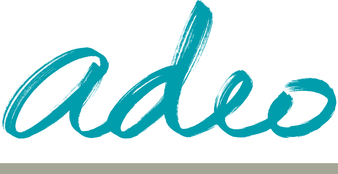

Thomas Gruson
CloudOps / IA Engineer — de la plateforme cloud aux agents IA.
Mes derniers clients
- Refonte des pipelines e-commerce
- ARA open source · migration GCP

- SLO / SLI · error budget Datadog
- Terraform multi-workspace · Checkmarx
- GitOps · Vault HA · Backstage
- Observabilité · Augmented Devs
Trois facettes qui s'empilent : DevOps → SRE → Platform Engineer.
Mes projets IA — construire
Alertes d'astreinte
Un agent IA qui prépare le travail de la personne d'astreinte : diagnostic, contexte business, comparaison historique.
Pour ne plus partir de zéro à 3 h du matin.
Commerce agentique
MCP Remote server exposant le e-commerce aux agents IA — l'IA fait les courses pour de vrai.
Démontré en live au SFEIR AI Meetup, branché sur de vrais APIs.
Deux POCs aux extrêmes : aider l'ops la nuit · faire les courses pour le client. Même fondation MCP.
Mes projets IA — diffuser & piloter
Marketplace Claude
Acculturation, FinOps token, bonnes pratiques. Plugins & skills partagés en interne.
Articles techniques
FinOps Claude Code · pattern Code Execution · Git Worktree · RAG diagnostic.
Télémétrie OTLP
Métriques Claude remontées par les volontaires. Dashboard Grafana pour piloter l'adoption.
Marketplace + articles + télémétrie : un système, pas trois initiatives isolées.
Mon métier demain
Accompagner l'adoption GenAI sur l'ensemble du SI — la fondation tech rend l'IA crédible.
Développeur augmenté
Cadre, FinOps, bonnes pratiques, marketplace de skills.
Agents IA
Conception, industrialisation, intégration au SI existant.
Pilotage & KPI
Télémétrie, dashboards, monitoring & alerting des usages.
Sécurité & Audit
Bonnes pratiques, DoS LLM, conformité GenAI.
Merci !
Sans la fondation DevOps / SRE, la GenAI reste un jouet.
Avec, ça devient une plateforme.